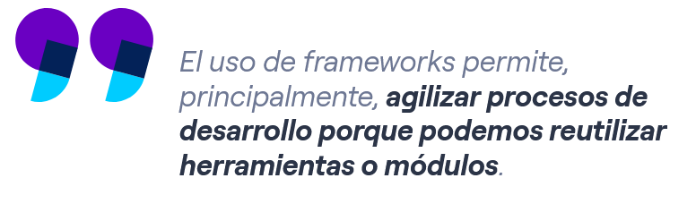
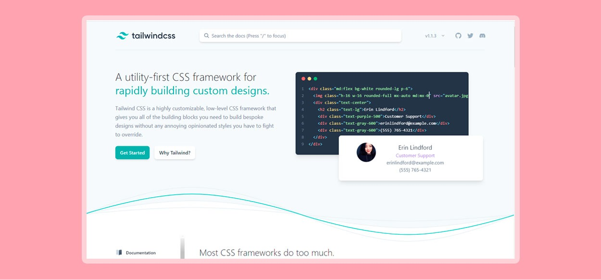
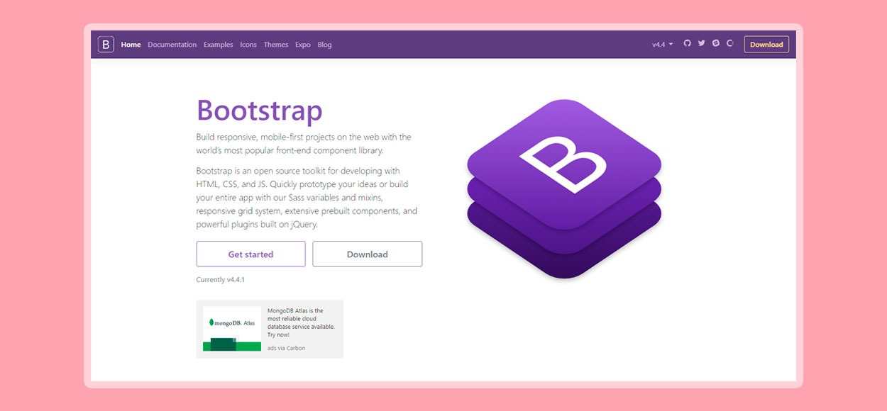
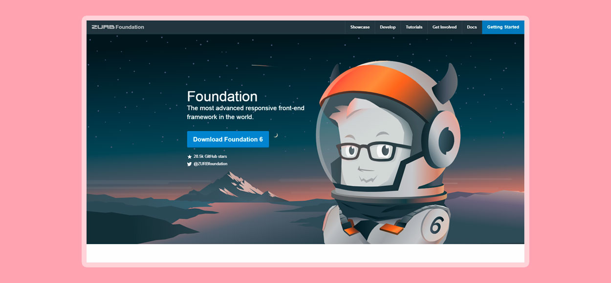
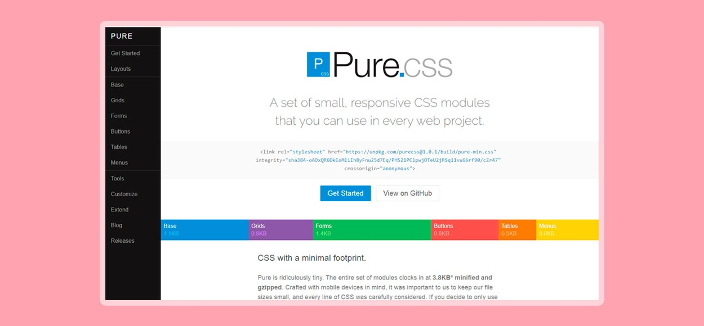

Frameworks CSS
¿Qué es un framework?
Un framework es un esquema o marco de trabajo que ofrece una estructura base para elaborar un proyecto con objetivos específicos, una especie de plantilla que sirve como punto de partida para la organización y desarrollo de software.
Utilizar frameworks puede simplificar (y mucho) una tarea o proceso, de ahí que se trate de una de las herramientas habituales que manejan los Digital Workers, porque les ayuda a ser más ágiles y productivos (y eso mola, ¿verdad?).
Generalmente, los frameworks son usados por programadores porque permiten acelerar el trabajo y favorecer que este sea colaborativo, reducir errores y obtener un resultado de más calidad. Pero no pienses que estas estructuras son cosa solo del departamento IT, qué va, en el mundo online hay frameworks para prácticamente todo: para definir el viaje de compra de un cliente, para aplicar mejoras a un producto digital y tener más conversiones… Y es que, hoy en día, la automatización es la clave para conseguir que cualquier proceso de trabajo sea rápido y eficaz sin perder un ápice de calidad.
¿Para qué sirve un framework?
Un framework sirve para acometer un proyecto en menos tiempo, y en el sector de la programación, con un código más limpio y consistente, de manera rápida y eficaz. El framework ofrece una estructura base que los programadores pueden complementar o modificar según sus objetivos.
El uso de frameworks permite, principalmente, agilizar procesos de desarrollo porque podemos reutilizar herramientas o módulos: ya tienes el ‘esqueleto’ sobre el que trabajar. El hecho de escribir código o desarrollar una aplicación más fácilmente te sirve para tener una mejor organización y control de todo el código elaborado, pudiendo usarlo nuevamente en el futuro.
- Puedes reutilizar código tantas veces como sea necesario. Asimismo, puedes optimizarlo, con todas las ventajas que ello conlleva.
- También puedes afrontar tareas propias de programación de forma automatizada, lo que aumentará tu velocidad (o la de tu equipo de trabajo) a la hora de programar.
Reducir tiempos implica una mayor productividad, del mismo modo que reutilizar recursos te lleva a minimizar riesgos. Por ello, usar uno o varios frameworks supone una gran ayuda para programadores y desarrolladores, ya que facilita sus tareas de forma considerable.
¿Por qué te conviene usar frameworks?
Te conviene usar frameworks porque contar con una plantilla para llevar a cabo el trabajo facilita las tareas, reduce los tiempos, evita errores y, en consecuencia, ayuda a que todos los implicados en el proyecto estén más satisfechos.
En el mercado puedes encontrar frameworks específicos para un lenguaje de programación concreto. Aunque también los hay que no dependen de un único lenguaje.
Cada vez más, los programadores buscan la optimización de su trabajo, independientemente del lenguaje que empleen. Como hemos indicado, usar frameworks les permite esa agilización y automatización de procesos, pero, llegados a este punto, no podemos dejar de lado otro tipo de ventajas:
- Favorecen el trabajo colaborativo: contar con esa estructura base, con unos estándares de programación, permite que distintos miembros de un mismo equipo trabajen de manera coordinada. Además, favorece que se comparta código y se reduzca la curva de aprendizaje de otros miembros del equipo o la tuya propia.
- Minimiza la posibilidad de riesgos: usar frameworks hace más fácil encontrar errores pero, sobre todo, evitarlos. Te garantiza, por lo tanto, mayor seguridad y, además, es habitual que exista una comunidad de desarrolladores detrás del mismo a los que hacerles llegar cualquier duda relativa al uso del framework.
- Fácil acceso a recursos e información útil: existen infinidad de frameworks y, cuando estos están muy extendidos, resulta muy fácil encontrar módulos, herramientas o información para usarlos. Además, te pueden permitir utilizar programación avanzada a la que, de otra manera, sería mucho más difícil llegar.
Algunos frameworks CSS
Tailwind CSS
Este Framework es muy personalizable, te permite crear una interfaz de usuario única, te permite jugar con los colores, tamaños de borde, tamaño de la fuente, paddings, margenes, sombras y otros elementos y propiedades.
Tailwind CSS se centra en los nombre de clases, se le hará difícil dominarla si no tiene nociones de CSS y de la herramienta Atomic CSS y si quieres saber más de este Framework, puedes visitar su sitio web.
Web: Visitar
Bootstrap
Este Framework es uno de los más populares en la actualidad, hasta la fecha de este Post se encuentra en su versión 4.4.1, cuenta con características muy importantes como esquemas de color, modificadores, clases útiles para usar formularios, cards, listas, tablas, videos, carrusel, ventanas modales, tooltips, etc.
Esta construida sobre SASS y es compatible con LESS y obviamente con SASS, si quieres saber más de este Framework, puedes visitar su sitio web.
Web: Visitar
Foundation
Este Framework junto con Bootstrap son uno de los más utilizados en la actualidad, Foundation es más sofisticado, asimismo es muy flexible y fácil de personalizar. Este Framework CSS te permite crear aplicaciones y páginas web adaptables a los dispositivos, empresas como Mozilla, HP, Cisco, eBay, Facebook, Adobe, Disney, entre otras, usan Foundation.
Si quieres saber más de este Framework, puedes visitar su sitio web.
Web: Visitar
Pure CSS
Este Framework es adaptable a los dispositivos y fue creado por la empresa Yahoo por el año 2014, fue construido sobre la herramienta Normalize CSS. A diferencia de Bootstrap, no permite crear diseños fijos y es muy ligero, pesa alrededor de 3.5 Kb solamente cuando se comprime y se minimiza. Este Framework cuenta con menús verticales, horizontales y desplegables, asimismo con formularios, botones, tablas, etc.
Si quieres saber más de este Framework, puedes visitar su sitio web.
Web: Visitar
Referencias
Edix, R. (2021, 13 septiembre). Framework: qué es, para qué sirve y algunos ejemplos. Edix España. https://www.edix.com/es/instituto/framework/
Colectiva, N. (2021, 28 abril). Los 5 mejores Frameworks CSS para Desarrolladores en 2020. Blog Nube Colectiva. https://blog.nubecolectiva.com/los-5-mejores-frameworks-css-para-desarrolladores-en-2020/